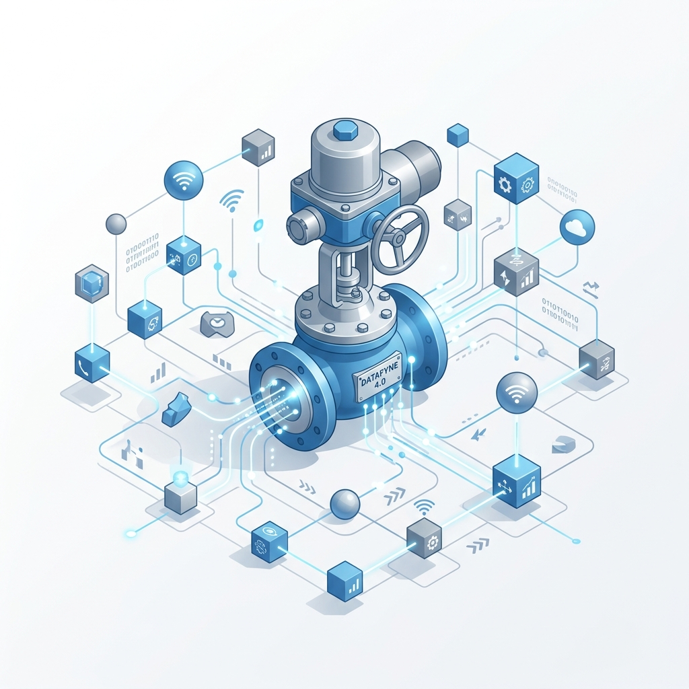
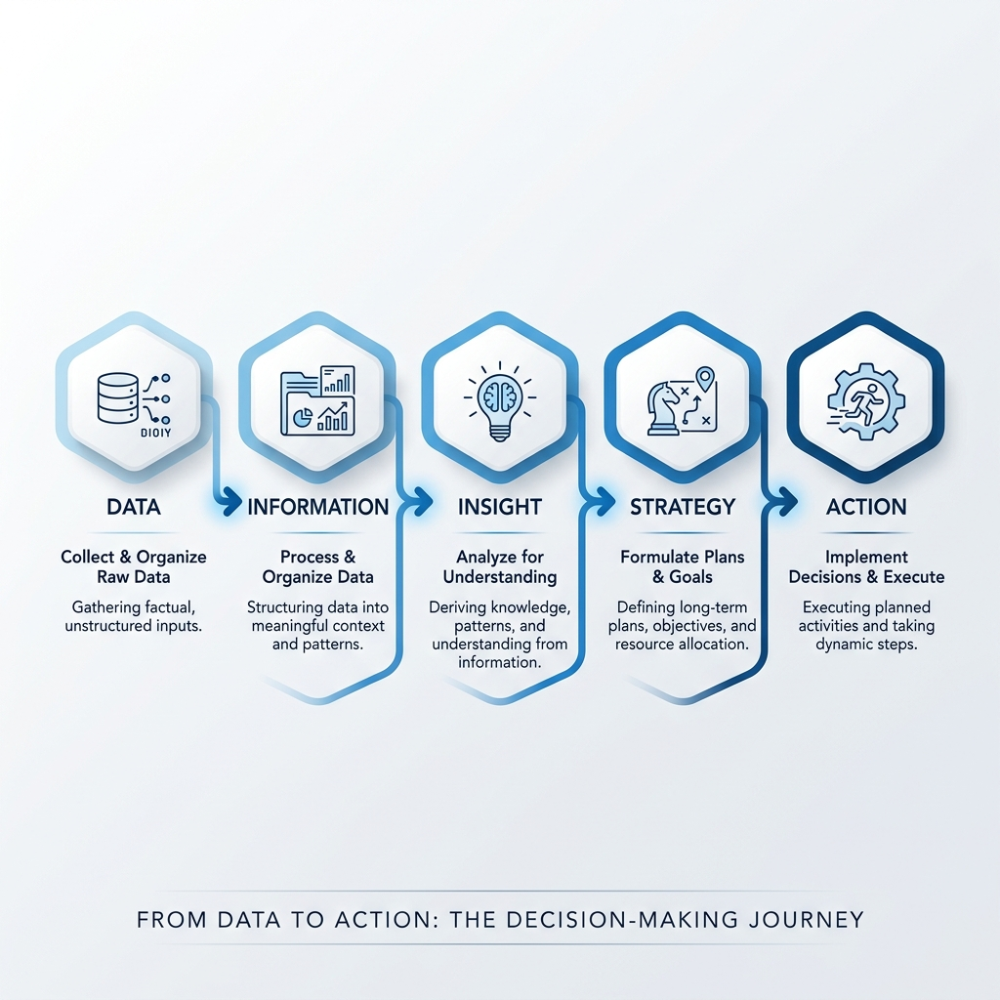
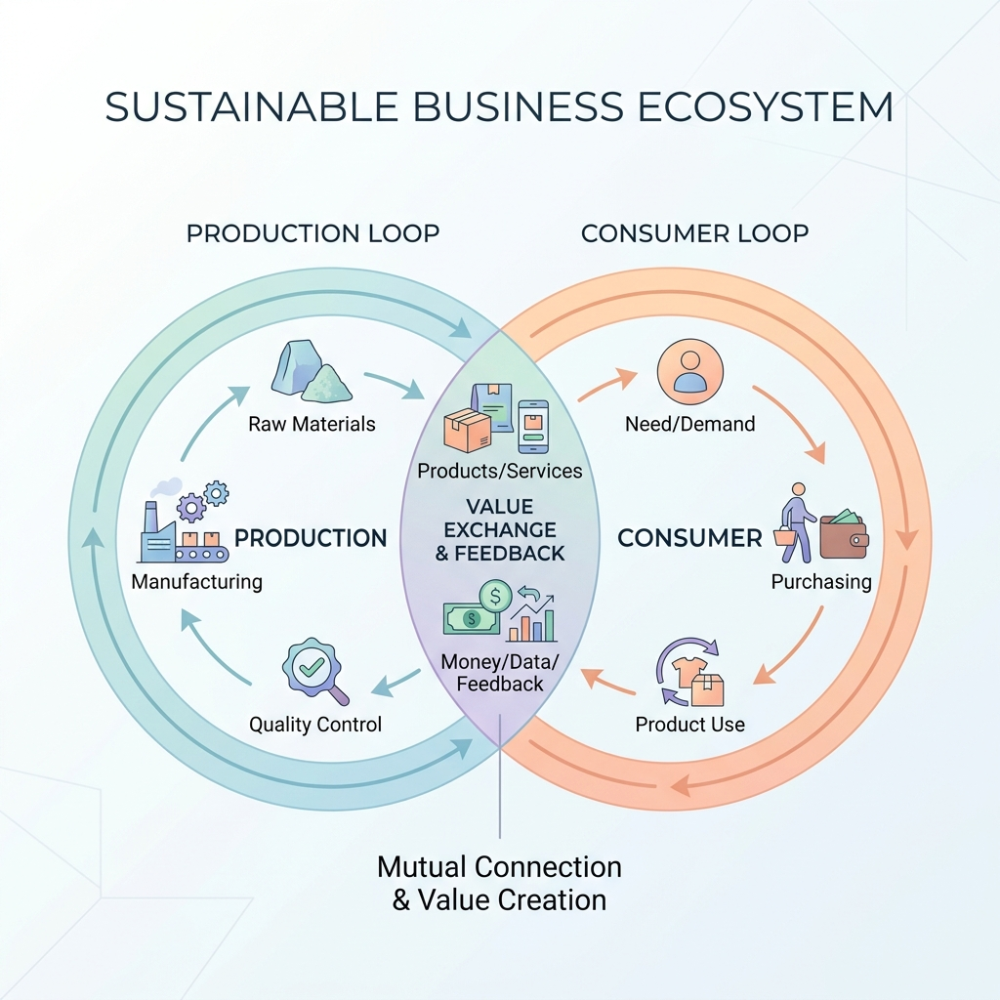
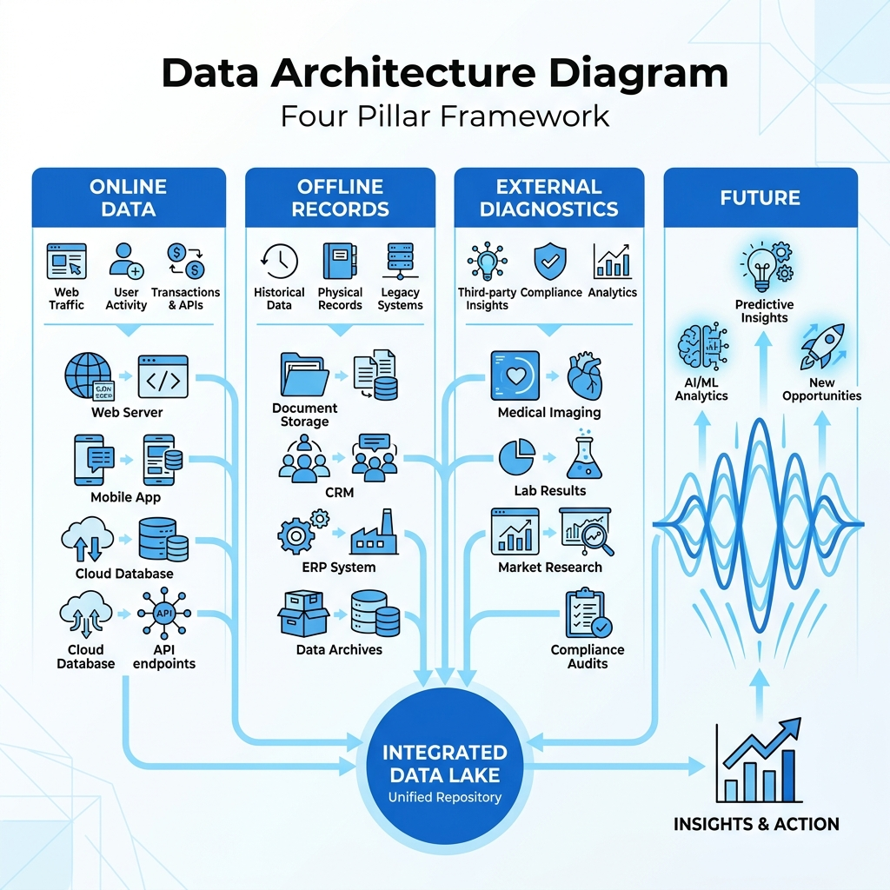
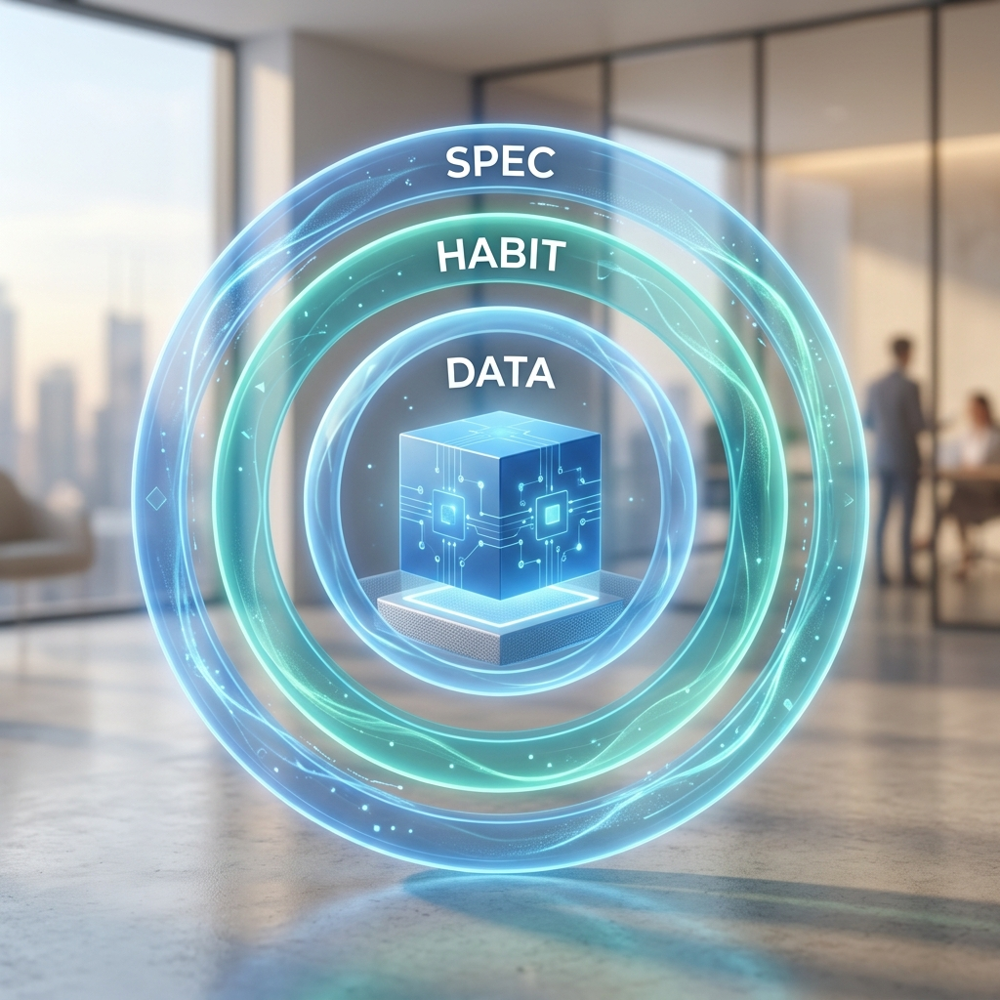
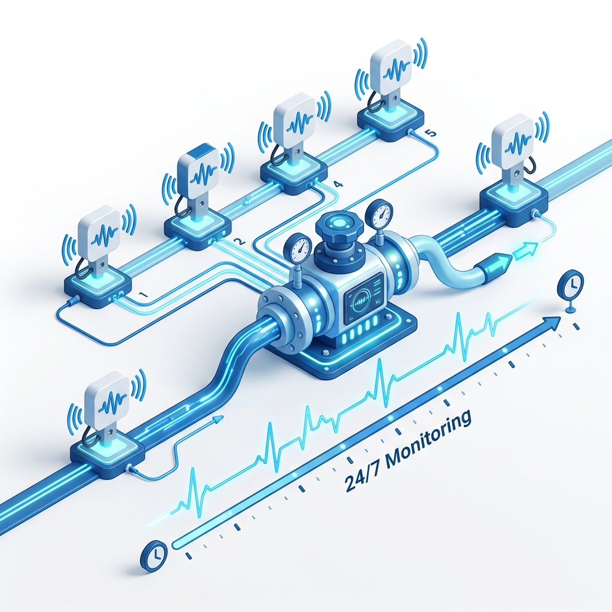

客戶在資產管理中的關鍵節點——年度預算撥付、大修計畫安排、緊急採購決策。
從「被動救火隊」轉型為「數位參謀」。當客戶的決策基準依賴於 VLMS 的健康報告時，我們便建立了極高的商業黏性（Habit Wall）。
讓數據成為 FCI 與客戶之間的信任橋樑。

VLMS 的核心價值在於如何將原始數據轉化為商業行動：

這不是生硬的工具堆疊，而是「數據從哪裡來，到哪裡去」的增強循環：
聚焦於廠區內部數據網路的建立。透過抓取設備與流程數據，幫我們「優化營運效率、降低成本」，這是我們原本就具備優勢的傳統主場。
聚焦於跨出廠區後的外部數據網路。透過客戶在外部環境的實際互動，產生能與內部數據互補的新資訊，進而幫我們創造出全新的加值服務與商業價值。
透過 RFID 與 VLMS 平台 的整合，客戶在現場只要一掃，設備履歷與即時數據便一目瞭然。這直接打破了過去只能在廠內看數據的限制；這項創新，正是我們跨出傳統主場，正式打造「消費生態系」的戰略起點！

VLMS 深度整合 FCIOS 即時數據與 Offline 離線診斷雙引擎：


下一步將整合感測器數據，達成 24/7 的實時健康預警。
進化為全方位的工業資產管理中心，實現 24/7 的自主監控與決策建議。
不只是收集數據，而是以深厚的專業邏輯解讀數據。將客觀的「診斷報告」直接注入年度維護與採購決策，從被動修復轉為主動洞察。
透過 RFID 與 VLMS 的虛實整合，打破傳統廠區邊界，將我們在生產生態系的優勢，成功延伸並建立完整的消費生態系。
喚醒沉睡在資料夾的 PDF，將孤立的維修紀錄、UReason 與 VI 報告連成「趨勢線」。用極致的便利性養成依賴，築起無法取代的防禦壁壘。